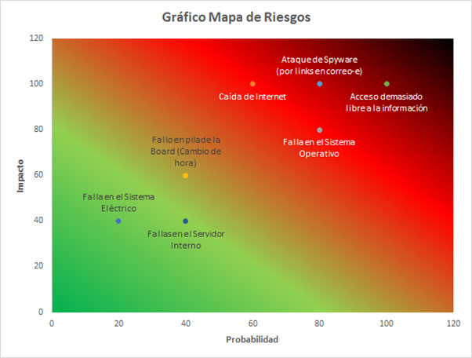
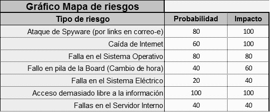

MAPA DE RIESGO
El siguiente, es el gráfico resultante del análisis, para determinar el Mapa de Riesgos:

Tabla_15. Gráfico Mapa de riesgos. Fuente: Los autores, utilizando una metodología enseñada por el instructor Miguel Alfredo Forero, del Centro de Servicios Financieros SENA.

Coordenadas de los riesgos en el Mapa de riesgos. Fuente: Los autores, utilizando una metodología enseñada por el instructor Miguel Alfredo Forero, del Centro de Servicios Financieros SENA.